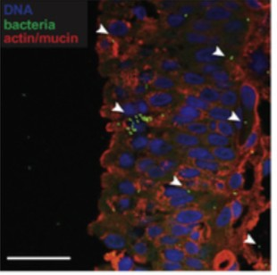

The unsolved problem of chronic urinary tract infections
UTIs afflict an estimated 400 million patients each year, predominantly women, making UTIs one of the most common bacterial infectious syndromes.141,142 Over one in ten women will contract a UTI every year in the United States and other Western countries.5–7 Of these, the majority respond to antibiotics, but a recurrence is frequent. A reported 27%–44% of women will contract a second UTI within one year of their first.143,144
For some of these women, their symptoms never fully resolve, a condition referred to informally as “chronic UTI”. A RAND study found 2.70–6.53% of American women have symptoms aligning with chronic UTI.145 This is corroborated by a 2024 population-wide study of Welsh health databases finding 1.7–6.0% of women could have chronic UTI, indicated by their use of long-term suppressive antibiotics prescribed for UTI management.146 Using a conservative 2.70%, we estimate that 3.3 million US women (and 660,000 British women) suffer from chronic UTI.
Chronic UTI devastates lives. UTIs cause excruciating pain and many sufferers of chronic UTI are unwilling to be more than a few steps away from a bathroom during (frequent) symptom flares. UTI recurrence is closely linked to sexual intercourse147,148 and chronic UTI can put severe strain on intimate relationships. Work from Chronic UTI Australia details these symptoms and estimates that one in ten sufferers have seriously contemplated or attempted suicide.149
There are no good therapeutic options for chronic UTI patients. Long-term (continuous) antibiotics do help some patients.11 Many cannot tolerate such lengthy treatment courses, which come with toxicity and severe gut dysbiosis. Clinicians are reluctant to prescribe such treatments as they conflict with good stewardship principles and increase the likelihood of generating antibiotic resistance.
Mounting evidence indicates that antibiotics fail in chronic UTI because the culprit bacteria hide deep within bladder cells. Indeed, some of the most consistent treatment successes for chronic UTI patients have come from a surgical procedure called electrofulguration, where pockets of bladder cells containing bacterial lesions are vaporized and cauterized.14,150–153
Two decades of research underpin the clinical evidence. The work began in mouse models, where researchers first identified that uropathogenic E. coli (UPEC) resist clearance by antibiotics and immune cells by invading the bladder epithelium.154,155 Intriguingly, antibiotics could sterilize the urine of these mice, but the bacteria would persist embedded in bladder tissue.10,156,157 Next, researchers identified that the intracellular bacteria form biofilm-like clusters inside host cells called intracellular bacterial communities (IBCs). Inside IBCs, bacteria can replicate and then eventually efflux from the host cell and invade another, repeating the cycle.9,158–163 The host cells shield IBCs from antibiotics: antibiotic activity is restored in the lab when bladders are removed and homogenized to break down the cell walls.10 It is the lesions formed by IBCs that likely correspond to those removed by electrofulguration (see Figure 12).

A further, even smaller subset of solitary bacteria hide within lysosomes, termed quiescent intracellular reservoirs (QIRs).164 Like IBCs, QIRs hide within host cells from antibiotics and the immune system and can drive cycles of reinfection. Shockingly, QIRs have adapted to survive within lysosomes, the very organelles designed to kill them.164
Organoid models allow researchers to better understand infection dynamics as they are easier to work with than are animal models. Recent advances in organoid technology have allowed detailed mechanistic studies, which have confirmed the findings in earlier animal models.165–167 Robust models which include immune cells showed that neutrophils and antibiotics alike are unable to remove intracellular bacteria (IBCs and QIRs), all visualized under high power microscopy.168,169
Finally, bladder tissue sampled from human, antibiotic-refractory UTI patients has revealed embedded bacteria.12,170,171 This finding held for patients with sterile urine, again supporting the idea that antibiotics are ill-suited to solve chronic urinary tract infections.
Chronic UTI is an archetypal syndrome of a disease refractory to antibiotics, not so much because of antibiotic resistance, but because bacteria hide where antibiotics cannot reach and where the immune system is less effective.
Patients need a new way to treat chronic UTI. Antibiotics do not work for them. Surgery with electrofulguration cannot possibly remove all hidden bacteria, not to mention how difficult the procedure is for patients.
Bacterial defense disablers, and in particular, Unison’s lead asset UNI-568911, could be the exact right technology. UNI-568911 can successfully treat chronic UTI in mice, a major demonstration of proof of principle (see Figure 5 in Chapter 1, repeated as Figure 13 here). Working “in unison” with the immune system, UNI-568911 produces a dose-response in clearing bacteria out of the kidney and urine, and at the highest dose, reduces bacteria by 99.8%. No antibiotic is required, and because of that, there is no discernible impact on the healthy gut microbiome (see Figure 6 from the opening chapter).
We further distinguish our results from antibiotics in terms of which bacteria our compound kills. As we described above, sterile urine accompanied by continuing infection is a common phenomenon in chronic UTI patients. Indeed, antibiotics clear more bacteria in the urine than does UNI-568911. But urine gets flushed regularly anyway. UNI-568911 concentrates inside immune cells, and further inside of lysosomes. We reason that because of this, it is aiding the immune system in killing the most recalcitrant, tissue-resident bacteria that antibiotics miss. These same bacteria provide the reservoirs for reinfection. Our future work centers around demonstrating this hypothesis and moving our first asset into clinical trials.
Chronic UTI is a compelling clinical problem in its own right. It is also the first proving ground for bacterial defense disablers. Chronic UTI is just the beginning of what bacterial defense disablers can do.